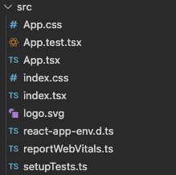

この記事では、ReactとTypeScriptを使ってp5.jsをコーディングする開発環境を構築します。
p5.jsでやりたいのは、たとえば「カラフルな線がゆらゆらと動く」だったり「ゆっくりと降り注ぐパーティクルのアニメーション」といった、ダイナミックでクリエイティブな表現だと思います。そんなp5.jsを使って何かしら動かすだけなら、p5.js editorを使えばすぐにコーディングが始められるでしょう。
まぁ実際のところはこれらの表現方法を前面に押し出すよりも、「SSRしているwebサイトの背景でラインアニメーションを実装したい」とか「冬には雪を、春には桜の花びらをトップページに散りばめたい」といったような、webサイトが持つUXをもっと上げるための付加的要素として用いるケースのほうが多いんじゃないかとも思います。
もちろん「ジェネラティブアート」としてp5.jsをダイナミックに使ってるところもあるとは思いますが、そのケースでもただ単純にindex.htmlとそれが参照するsketch.jsだけより、今ならVue.jsや後述するReactと言ったフレームワークやライブラリを使った方がwebページとして扱いやすくなって保守性を向上できるはずです。
それと個人的に「Reactとp5.jsって、同居させたときフツーに使えるんだよね？なんか変なところで衝突したりしないよね？」という確認をしたかった・・・というのもあります＿( _´ω`)_ﾍﾟｼｮ
そこで、今回はただ利用するだけでなくより現実的にp5.jsを活用する方法として、ReactとTypeScriptをベースにp5.jsによるクリエイティブなコーディングが可能な環境を構築します。
まずはReactの環境を作らないことには始まりません。ここでは、手前味噌ですが事前に作っておいたReact用のDockerコンテナを流用することとします。
git clone https://github.com/ysko909/docker_for_react_sample.git app_nameここではgit cloneしていますが、ZIPファイルによるダウンロードでもOKです。
次にVisual Studio Code（以下、Vs code）を起動し、クローンした先のフォルダを開きます。なお、ここではVs codeの拡張機能であるRemote Containerなどはインストール済みである前提です。Vs codeのメニューから「Reopen in container」を選択して、コンテナのビルドを実行します。コンテナのビルドには時間がかかるため、しばらく放置してコーヒーでも飲みましょう。
npx create-react-app app_name --template typescript
cd app_name
yarn startコンテナのビルドが終わったら、シェルを開きnpx create-react-app app_nameを実行してReactの環境を構築します。app_nameの部分は任意です。今回はTypeScriptで作りたいので、--template typescriptのオプションをつけています。環境構築が終わったら、フォルダを移動してyarn startを実行して、ブラウザで「localhost:3000」にアクセスしましょう。Reactの画面が表示されればここまでは成功です。
yarn add p5
yarn add react-p5-wrapper
yarn add @types/p5次に肝心のp5.jsを追加します。react-p5-wrapperは、Reactのコンポーネントとしてp5.jsを利用するためのライブラリです。一応これがなくても自分でラッパーを作成することでp5.jsをコンポーネントとして利用できるのですが、ここでは環境構築を優先してもともとあるものを活用しています。
ここまでで開発環境の準備は完了です。
開発環境の構築が終わったので、ここからは実際にTSファイルなどを作成してp5.jsを動かしてみましょう。ここでは、p5.jsのGet Stertedページのサンプルをもとにして、p5.jsが動作することを確認してみます。

まず、今存在するファイルの整理を行います。create-react-appを実行した直後だと、srcフォルダの内容は上記のスクリーンショットのようになっているはずです。必要なのは後述する2ファイルだけなので、他のファイルはとりあえず削除します。いやまぁ*.text.tsxとかテスト用に必要なファイルはもちろんあるんだけど、とりあえず今必要じゃないからいいかなーって_(┐「ε:)_
import React from 'react';
import ReactDOM from 'react-dom/client';
import App from './App';
const root = ReactDOM.createRoot(
document.getElementById('root') as HTMLElement
);
root.render(
<App />
);まず、なにはともあれ必要なのがindex.tsxです。このファイルは何をしているかというと、後述するApp.tsxを読み込んで、index.htmlのrootという要素部分に書き出しているだけ。つまり、ほぼ何もしていないです。このファイルに関しては、CSSファイルをインポートしているような必要ない箇所を削除しました。
import p5 from 'p5';
import { ReactP5Wrapper } from 'react-p5-wrapper';
const App = () => {
return (
<div className="App">
<ReactP5Wrapper sketch={sketch}></ReactP5Wrapper>
</div>
);
}
const sketch = (p: p5) => {
p.setup = () => {
p.createCanvas(400, 400);
};
p.draw = () => {
if (p.mouseIsPressed) {
p.fill(0);
} else {
p.fill(255);
}
p.ellipse(p.mouseX, p.mouseY, 80, 80);
}
}
export default App;次にApp.tsxです。こちらが実際の処理を担当しているファイルです。こちらにp5.jsの処理を記述します。ここではGet Startedページのサンプルである「マウスポインタに追随する円」を描画するコードを記述しています。ただし、ここではp5.jsのインスタンスモードを使用するよう、もともとのコードから少し書き換えています。これは、p5.jsの関数がグローバルに展開されてしまうのを防ぐためです。詳細な理由は話すと長くなるので割愛しますが、インスタンスモードでp5.jsを利用することでグローバルを汚染せず、エディタのサジェスト機能を有効活用できる重要な効果を発揮してくれます。
ここまでコーディングが済んだらyarn startです。ブラウザでhttp://localhost:3000にアクセスしましょう。
Canvasの背景が白なのでぱっと見はCanvasがわかりにくいですが、マウスの左ボタンをクリックしたり離したりしながらマウスポインタをぐりぐりと動かすと、Canvas上に上記のような描画が実行されるはずです。これで、ReactとTypeScriptを使ったp5.jsのコーディング環境が構築できました。
当初、この環境は軽量化のためAlpineベースのNode.jsを採用しようとしたり、Parcelを採用しようとしたりして、そこそこ迷走していました。ただ、現実問題として「p5.jsを利用するのにp5.jsを単体で利用することってあんまりないよね？なんかのフロントエンド用フレームワーク使うの前提じゃない？」という考えが背景にあったので、「それならフロントエンド開発でメジャーなReactとTypeScriptの組み合わせにp5.jsを加えるのが最適解では」という観点から環境構築を進めてきました。
というわけで当初の「AlpineでParcel環境構築しようとしたらエラー吐く」というような苦労は、まさに徒労となったわけですが・・・ツラみ。
なにはともあれ、多分「ふつーにwebサイトの構築ができてp5.jsも利用できる」という目的に対して、TypeScriptを含めモダンな開発環境が用意できたのではないかと思います。
ちなみになんですが、そもそもなんでp5.jsをいじろうと思ったかって言うと、オーディオビジュアライズしたかったからなんですね。p5.jsだと見た目だけでなく音声も使えるので、なんかおもしろいことができそう・・・と思いつつ、今回は環境構築で終わろうとしているわけですが。あふん_(┐「ε:)_